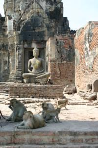

Le 30 décembre 2004,
 Réveillés à l’aube par la télévision du voisin et le chant du coq (nous l’aurions bien étranglé ce satané oiseau ce matin...), nous prenons tout de même notre temps pour nous préparer. De toute façon. la ville est petite et il ne reste plus grand chose à visiter. Nous en profitons pour nous reposer un peu. La visite des temples est spécialement amusante à cause des nombreux singes qui ont élu domicile. Ils grimpent aux jambes des touristes pour fouiller dans leur sac. Pas très farouches ces bébêtes ! Il ne vaut mieux rien laisser traîner ! Après un bon moment sur Internet (nous avons du temps libre, il faut en profiter... mine de rien, ça prend un temps fou d’alimenter le site !!), nous partons dîner sur le marché de nuit. Tous les stands de nourriture sont tentants et je me laisse aller pour un curry de palourdes véritablement délicieux ! Je finis mon repas avec un bon gâteau de riz fait maison qui tient bien au corps et une crêpe dans laquelle sont mélangés un oeuf, du lait et du sucre... bien gras à souhait ! Nous rentrons bien repus et contents de notre marché de nuit !Eve-Laure
{kind=link}